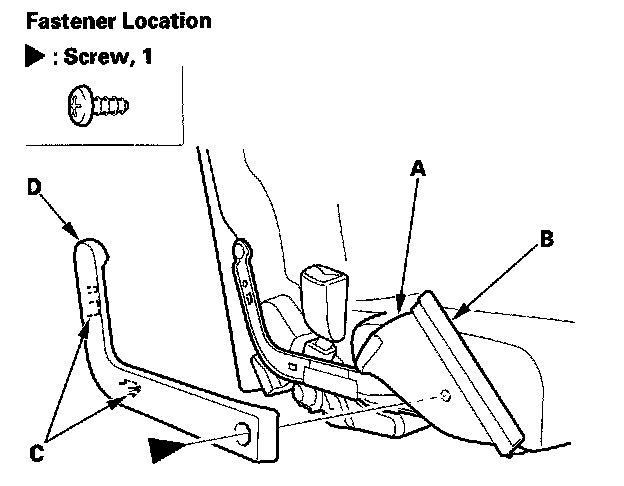
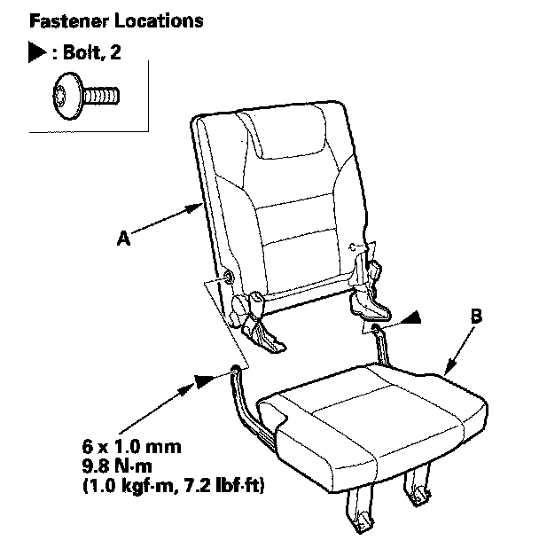
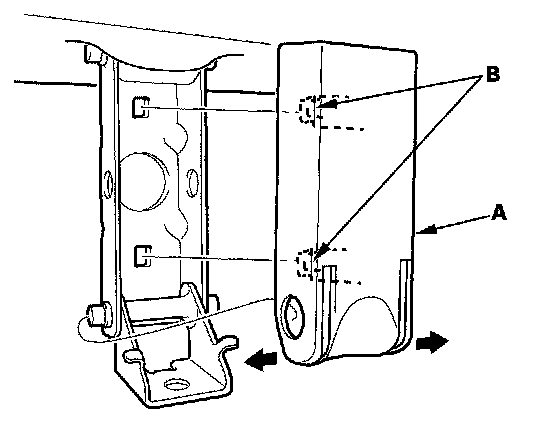

Third Row Seat
Third Row Seat Disassembly/ReassemblySpecial Tools Required
KTC trim tool set SOJATP2014 *
* Available through the American Honda Tool and Equipment Program
NOTE:
- Put on gloves to protect your hands.
- Use the appropriate tool from the KTC trim tool set to avoid damage when removing components.
- Take care not to scratch the body or tear the seat covers.
1. Remove the third row seat.

2. Release the hook (A) from under the seat cushion, and pull back the seat cushion cover (B) as needed. Remove the screw and Release the hooks (C), then remove the pivot bolt cover (D) from both sides of the seat.

3. Using a T30 TORX bit, remove the pivot bolt securing the seat-back (A) and sat cushion (B), then separate them.

4. If necessary, remove the front link cover (A) by releasing the hooks (B).
5. Install the seat-back in the reverse order of removal, and note these items:
- To prevent wrinkles in the seat cushion cover, make sure the material is stretched evenly over the pad before securing the hook strip.
- Push the hooks into place securely.